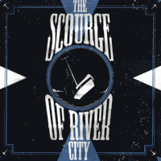

the Scourge Of River City - The Scourge Of River City (Album, 2009)
01 - No Romance (2:50)
02 - Shipwreck (2:59)
03 - Long Time Coming (2:09)
04 - River City (2:02)
05 - Lonesome Tide (3:07)
06 - Fall From Grace (2:52)
07 - Still Searching (2:52)
08 - Following Sea (2:28)
09 - Dark Streets (3:58)
10 - Heart's Horizon (4:37)
11 - Shadows Pass (2:06)
12 - Blind Fate (2:34)
© Cherry Bomb Recordings :: [CR BOMB 002]
Notes
Review
343/366 (Project 366)
Creativity is always of some interest, especially with an open approach. Have you ever thought about Alternative Rock with Melodic (hardcore) Punk sound and groovy Punkabilly powder on top of it? This album is something about that. Just an insanely harmonious combination of somewhat screaming vocals and a rather rockin' pop motive. And mentioned things in one unique style, which is anyway quite strongly tied to some alternative forms of Rockabilly and creating new ones. Sometimes it all falls out into a pretty cool sounding alt Rock'n'Roll and even close to a love-nutty psycho tone.
There is no way to meet no drive, pushy energy, lyrical backdrop and furiously beautiful solos. All of this is in almost every song. And also very emotional voices, atmospheric arrangements and wistfully skating. The overall tone is rather not encouraging or stimulating (awakening), but rather epic or loading (straightening). In a sense, the album is somewhat monotonous, but each composition is rather peculiar and each tune has its own characteristics, charms and, I must write, awesomeness. But there is a certain hard line of doing pattern, however, that actually makes this sound exceptional and reinforces the chosen style. And of course each track has something fresh, special and surprising.